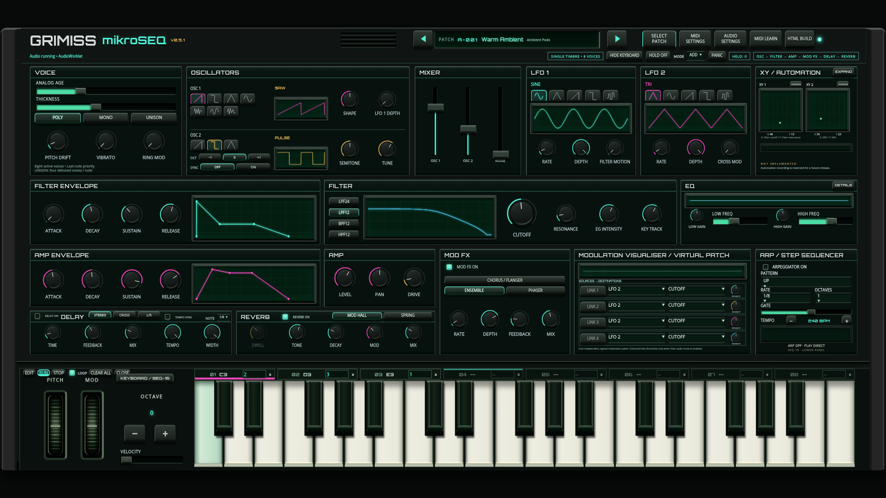
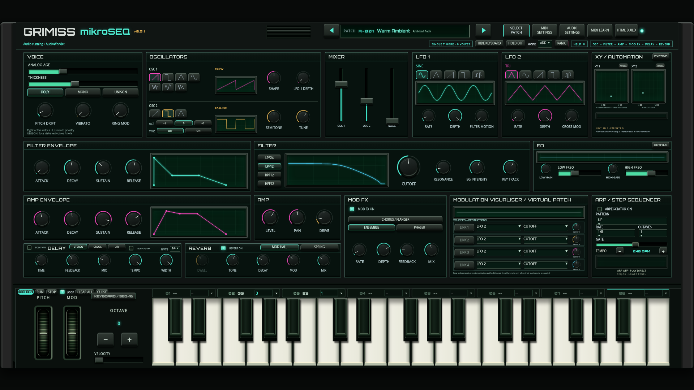
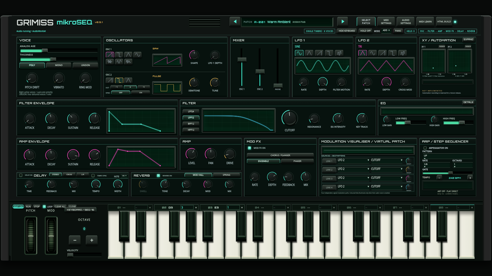

Open the playable instrument · Implementation, compatibility and test report
For manual transposition, select ROOT SOURCE: KEYBOARD on SEQ-16. Press a key: the next pitch step uses that root without restarting the melody. Release retains the selected root. FIXED keeps the old behaviour.
Press PROGRAM to flip to the keyboard-side editor. Enter notes, select any slot to replace it, and set durations from 1–64 pitch steps. RUN leaves EDIT and starts/resumes the program; STOP freezes only root progression. Turn EDIT back on to change notes. With EDIT off, held notes temporarily override a running program. CLOSE hides the strip without stopping playback.



Evidence: keyboard roots · program timing · audio compatibility · browser interactions. Physical controller/tablet testing remains unverified.